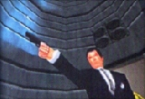
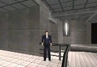
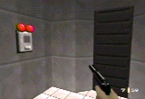
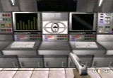

|
.
| Goldeneye
Version Beta : Bunker |
| Pas
grand-chose à se mettre sous la dent, si ce n'est quelques
Images... La Première Photo nous montre le Bunker, et Bond
a un Laser ! Ceci confirme la Théorie comme quoi cette Arme
était assez présente dans le Jeu au Début. La
Deuxième Photo nous montre l'ancien KF7 Soviet (voir Armes
Beta) avec la Cible, mais PAS de Zoom !! La Crampe que c'aurait
été sans Zoom !! La Troisième Photo nous montre
la Cinématique de Début, sauf que Bond a son Costume,
pas la Combinaison Noire de la Version Finale. |



Dans le Bunker 1, on a des Russian Soldier, et dans le Second des Arctic Commandos. C'est simple à retenir pour voir dans quel Bunker a été prise la Photo. Ci-dessous, 2 Photos faites avec le Debug Mode dans le Fameux Bunker-Vide. En fait, il semblerait que le Costume de la Photo ci-dessus ait été un des Premiers à avoir été créé, et il apparait donc sur beaucoup de Photos Beta. |


Ci-dessous, j'ai fait apparaitre des Alarmes Beta !


